Welcome to the official site for Loved Pets! This is a site for all pet lovers or anyone interested in adopting a pet, becoming a volunteer to our shelter.... or maybe both!! Scroll down or use the menu bar to navigate our site! Any questions, feel free to contact us
Here at Loved Pets Animal Shelter and Rescue, we believe that all animals, regardless of their specie, deserves a chance in getting their happy ending and finding a forever home and family. Our team works very hard to ensure that each of our pets, rescued or not get veterinary care to make sure they are safe. All animals we rescue are screened for health issues upon arrival, washed and groomed and photos of the pet are added to our site for all the pet lovers and families who want to adopt to see. All potential families are required to do a screening of adoption history, housing history, and background history to ensure providing a safe home.
Here are the animals that we have avaialable for adoption! They are all very loving and sweet! Look at our table to learn more! Any questions, don't be afraid to contact us! We are always happy to answer questions.
| Name | Photo | Breed/Gender | Age | Details |
|---|---|---|---|---|
| Cocoa |

|
Female Chocolate Labrador | 20 Weeks | Cocoa is sweet as pie and she loves to give kisses and play! She is fully vaccinated and healthy. |
| Jack and Annie |

|
Male and female brother and sister mix | Both are 6 weeks old | Jack and Annie are a very playful duo! They are also very lovable and love to cuddle.They are up to date with their vaccinations |
| Jellybean |
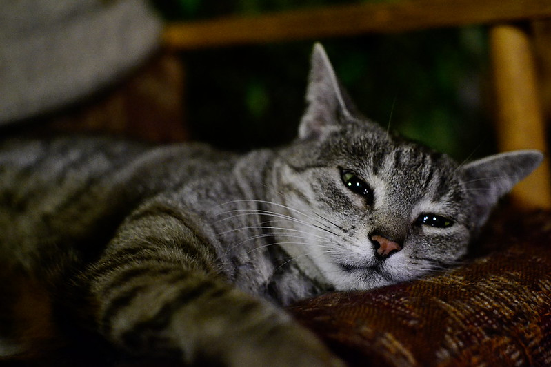 |
Female Gray Tabby | 2 Years Old | Jellybean is a very social cat. She was found in a storm drain, but treated for her condition. Now she is all better and loves to snuggle with her family. |
| Max |
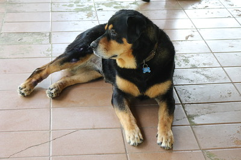 |
Male Rottweiler | 3 Years Old | Max was given to us by a previous owner, but Max is a lovable boy! He loves to play ball and go for walks in the park. He is fully vaccinated. |
| Patches |
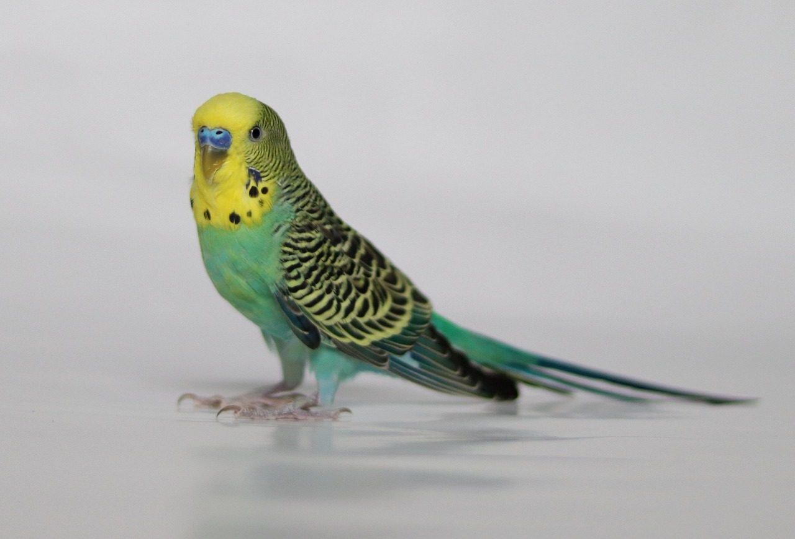 |
Male Budgie/Parakeet | 3 Years Old | We found Patches in a tree all alone with no nest nor food. We gave him food and took care of him. Although he is not a dog or cat, he is very lovable. He loves toys and people, |
| Pollie |
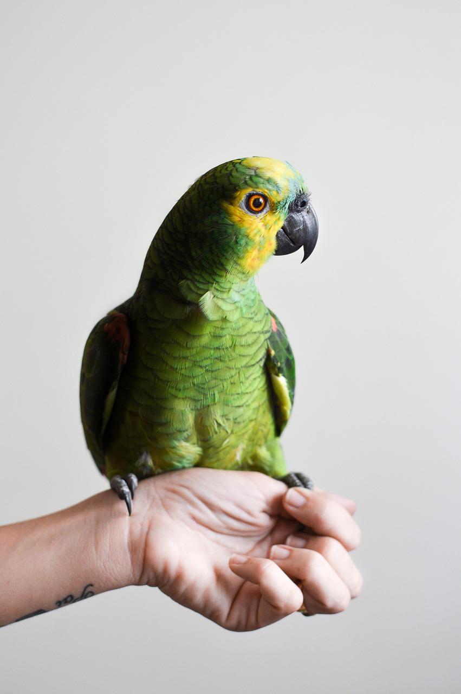 |
Female Parrot | 1 Year Old | Pollie was given to us as her owner was moving. She loves to talk to people and fly around. She is fully vaccinated and trained to fly and stay with her owners |
| Queenie |
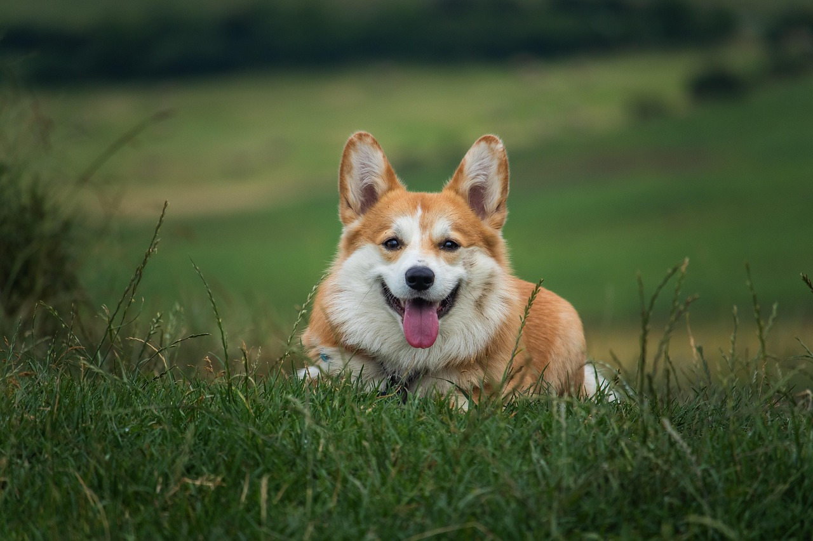 |
Female Corgi | 2 Year Old | Pollie was given to us as her owner was moving. She loves to talk to people and fly around. She is fully vaccinated and trained to fly and stay with her owners |
| Rosco |
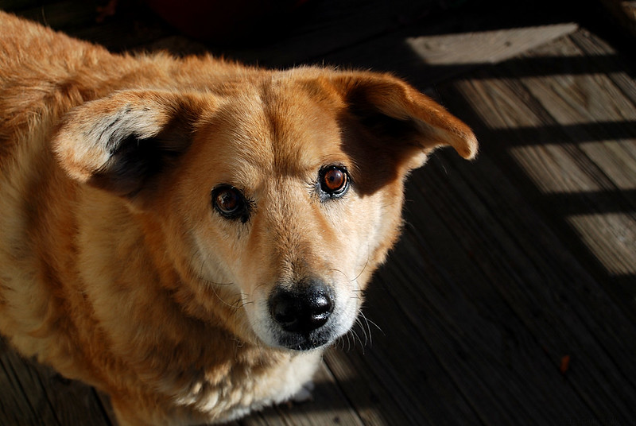 |
Male Corgi/Chihuahua | 8 Years Old | Roscoe is an older house trained dog whose owner had to surrender him. He is ready for a home! |
| Sheldon |
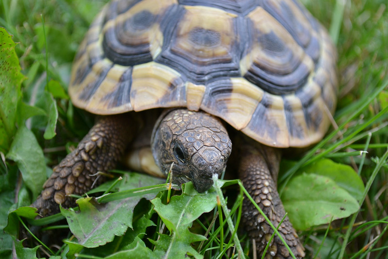 |
Male Box Turtle | 1 Year Old | Sheldon likes to sit in the sun, and doesn’t bite! |
| Simba |
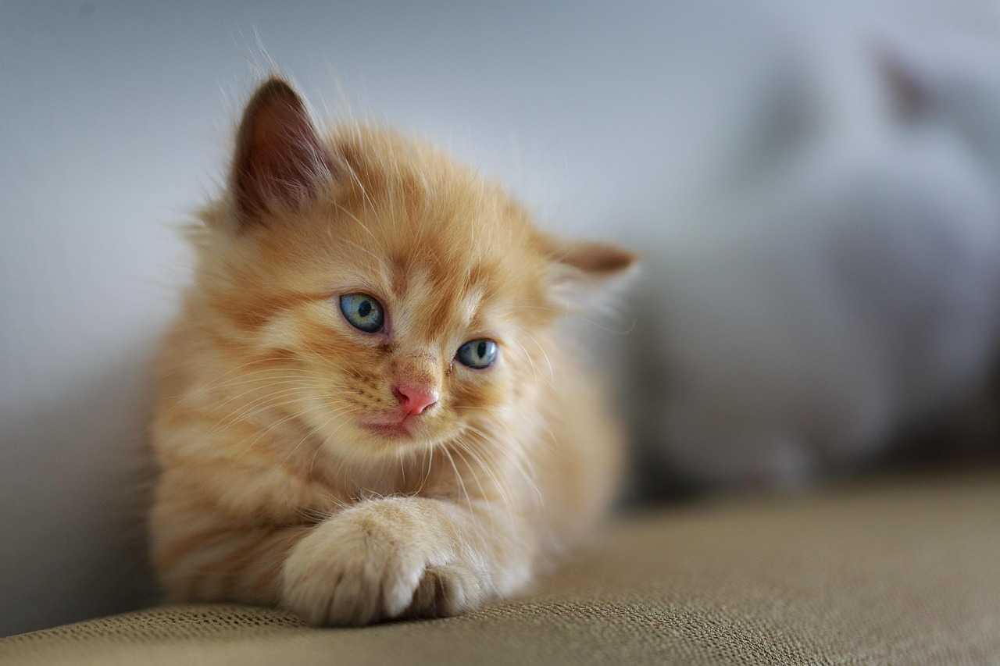 |
Male Orange Tabby Cat | 7 Months Old | Even though he is only a little kitty, he is very curious! He is fully vaccinated and loves to jump around and play. |
| Theodore |
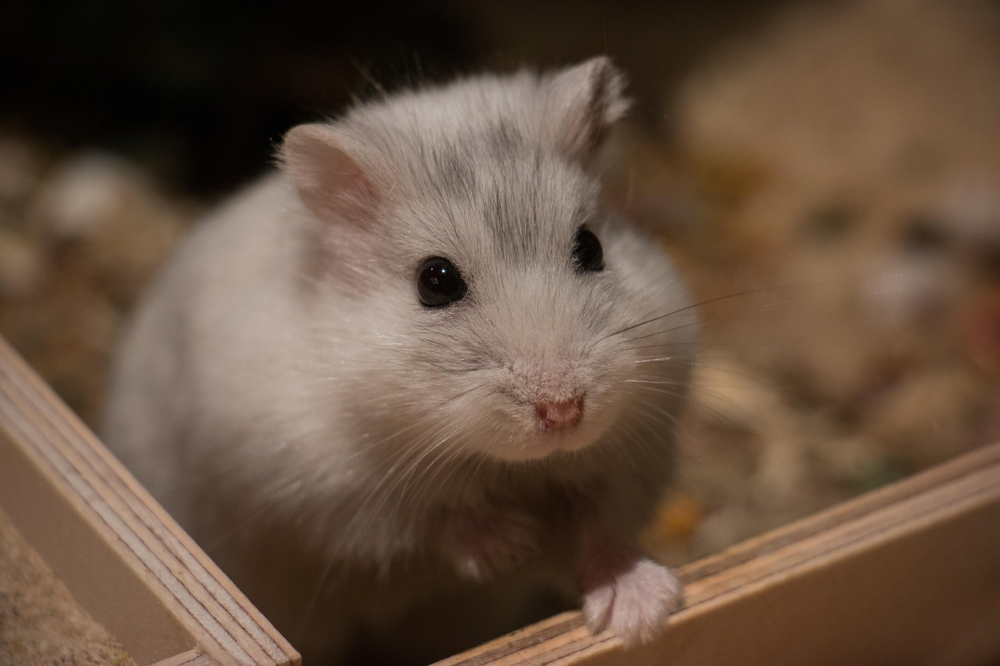 |
Male Dwarf Winter White Russian Hamster | 7 Months Old | He may be small he is energetic! Theodore loves to run around, especially on his wheel. He is also very lovable. |
| Thumper |
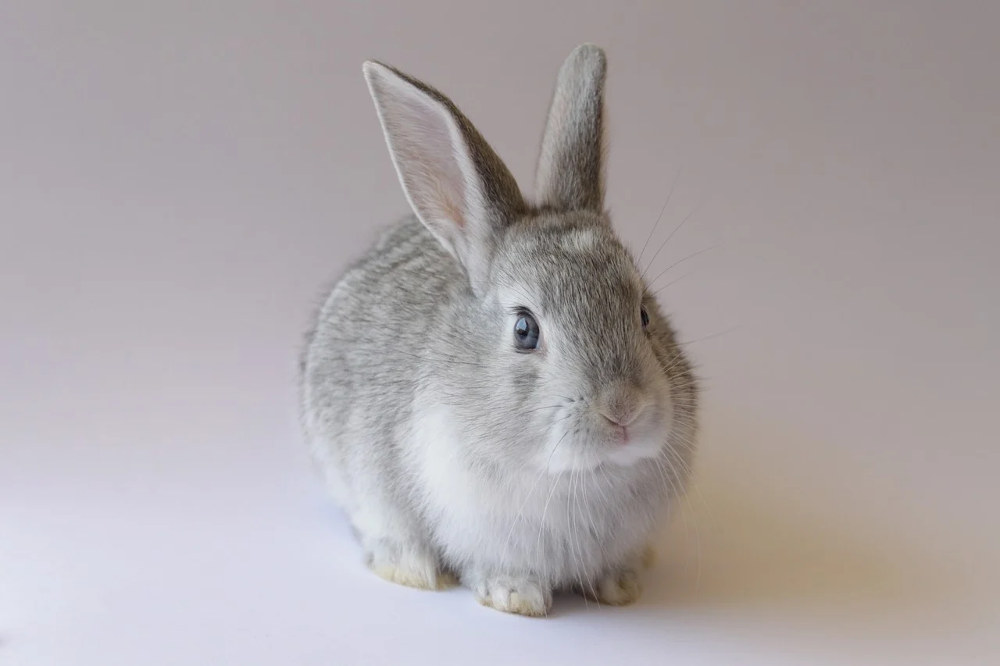 |
Female Flemish Giant Bunny | 2 Years Old | Thumper is very lovable and loves carrots. She was found in a park with a broken leg. We took care of her and she is fully vaccinated. Despite her previous broken leg, she loves to hop and play. |
| Willow |
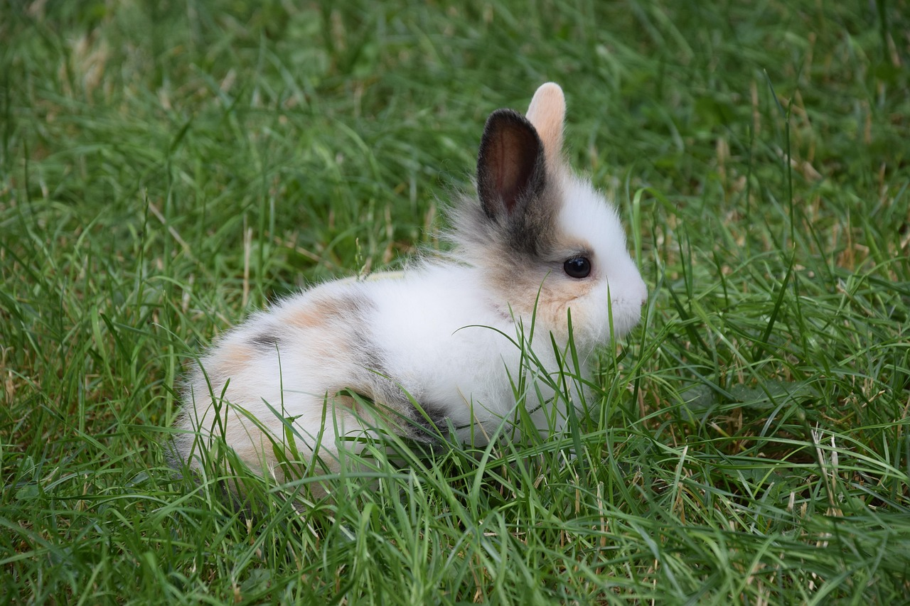 |
Female Dutch Rabbit | 5 months Old | Willow is a very lovable bunny. She loves to cuddle and be around humans. Since she is a baby, she is a bit picky with her diet. It is best to give her carrots, kale, and pellets for bunnies. |
Do you love pets? Do you live in the Arizona Region and would like to be a part of our team?
We can always use volunteers to assist with feeding, batheing, and grooming and socializing with the animals making sure they are happy and everything in the shelter runs smoothly. If you would like to be a part of our team, please complete the steps below.